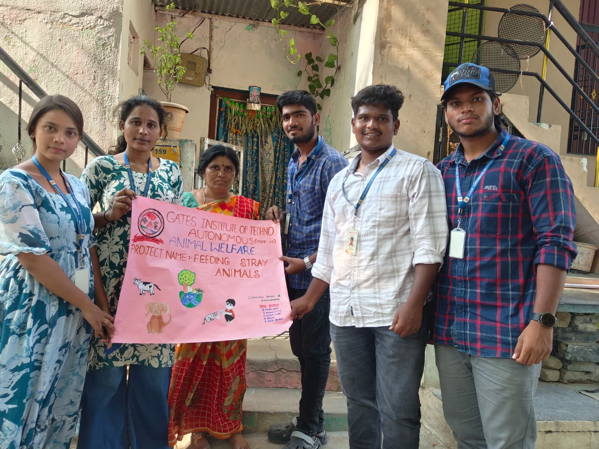
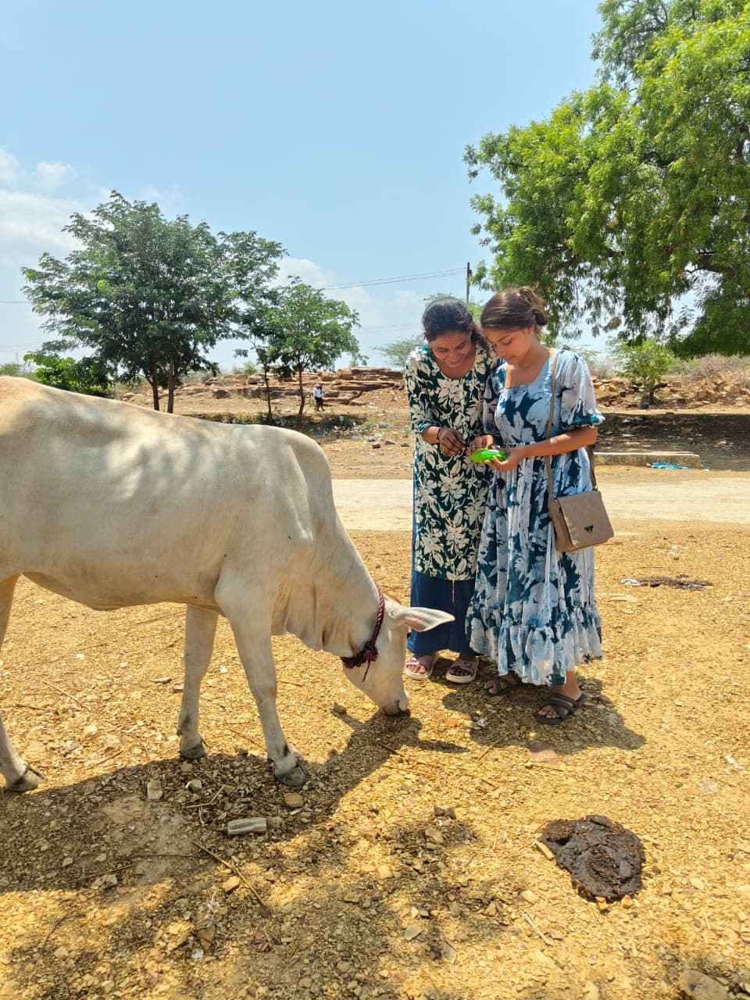
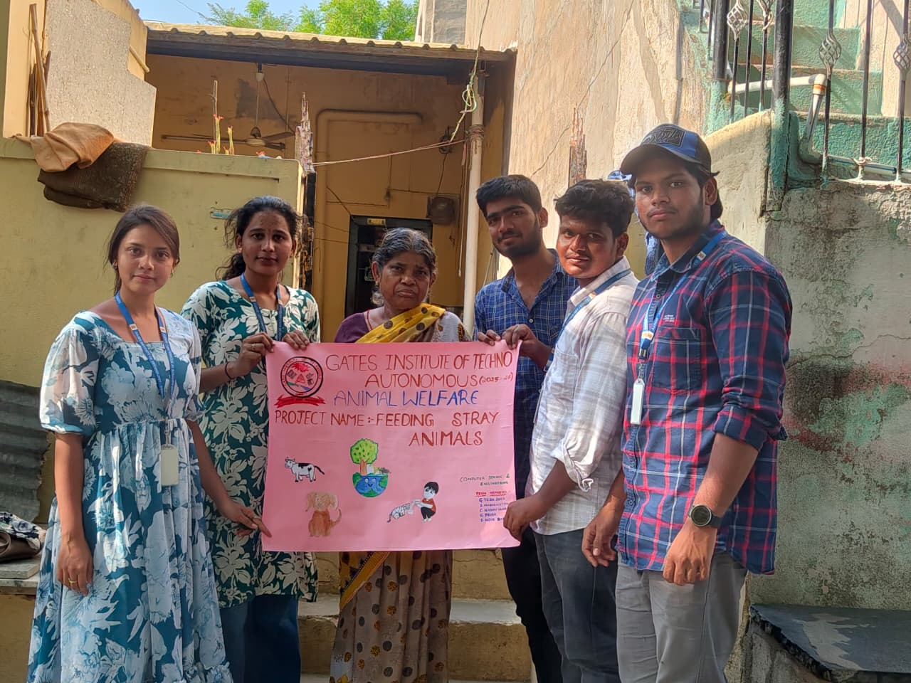
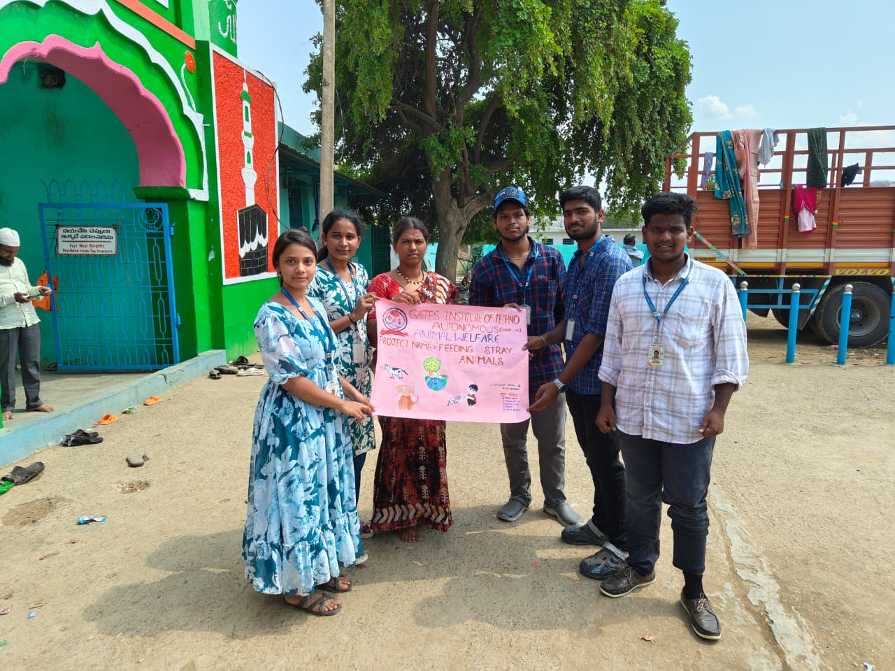
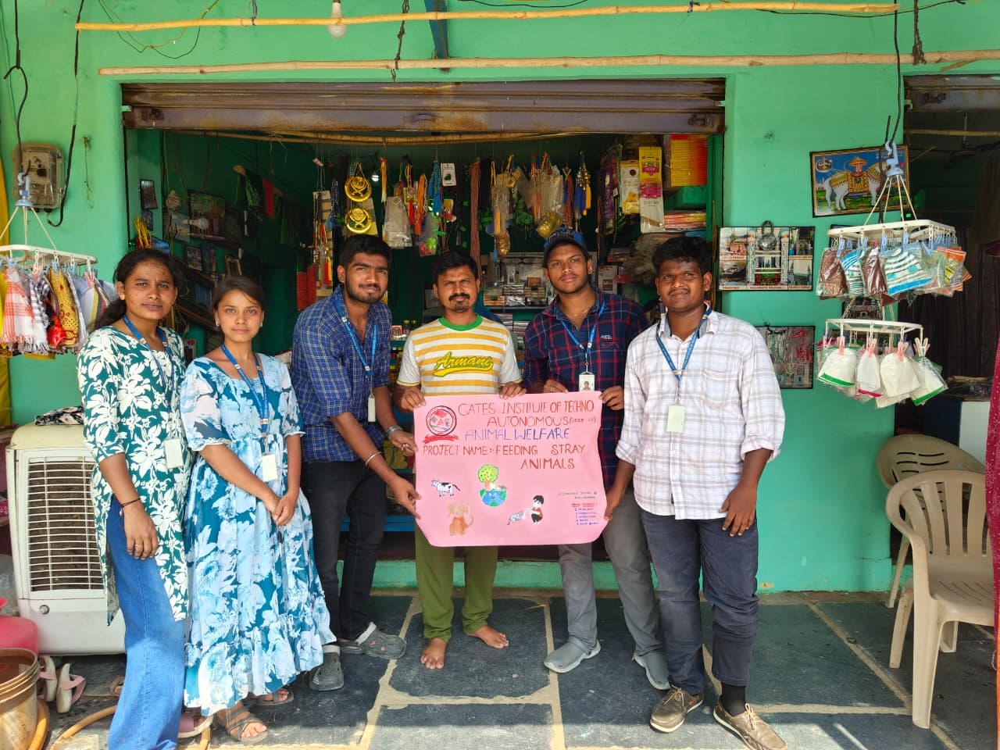
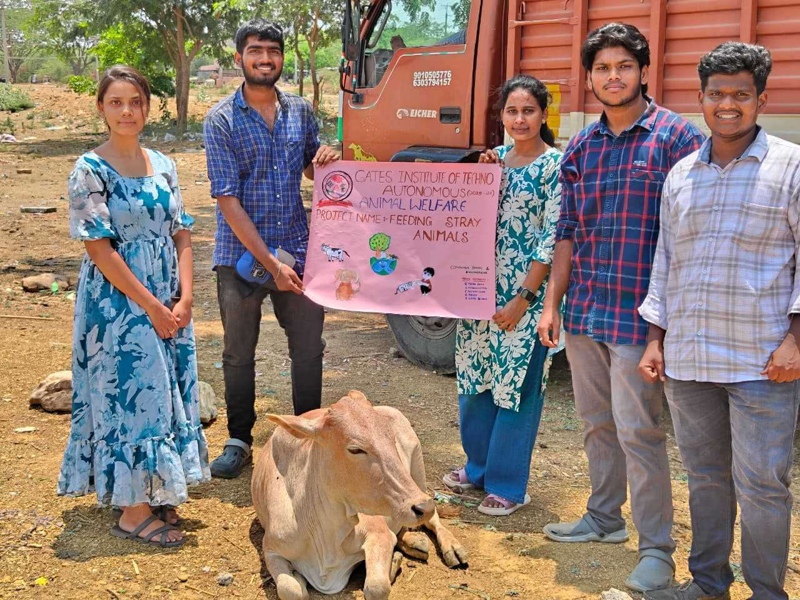
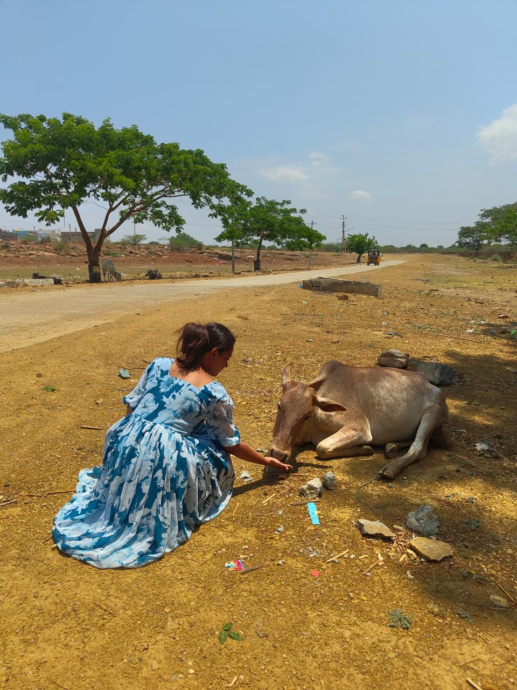
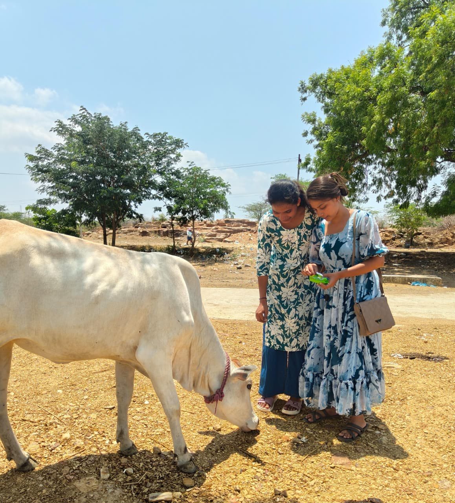
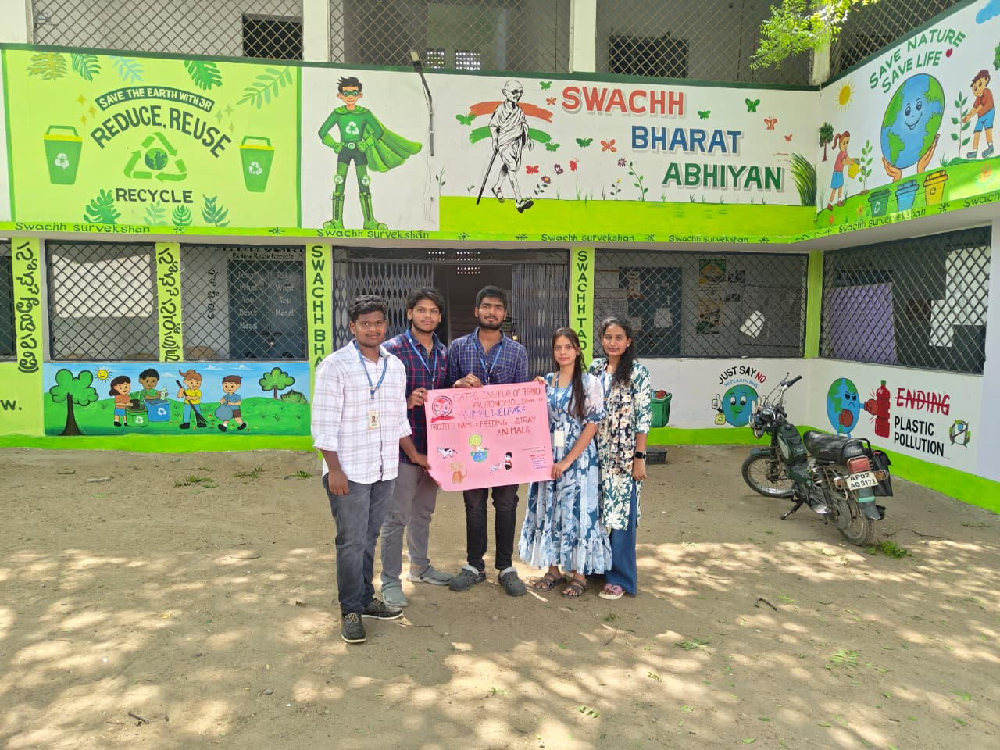

Behind every rescued animal is a team of caring people who work together to create a safer life for animals. Our team includes rescuers, caregivers, adoption coordinators and technology supporters who dedicate their time and skills to helping stray animals.
We believe that saving animals is not only about rescue, it is about compassion, responsibility and building a community where every animal gets love and care.

Handles emergency rescue calls, coordinates rescue activities and ensures animals receive immediate help.

Provides food, shelter support, basic care and spends time with rescued animals.

Finds suitable families and helps rescued animals start a new life.

Creates awareness programs about animal safety, kindness and responsible adoption.

Develops and maintains the platform that connects people with animals needing help.

Works with care teams to support animal recovery and health management.

Takes care of rescued animals by managing feeding schedules, basic needs and their overall well-being.

Provides food, shelter support, basic care and spends time with rescued animals.

colleges Encourages young volunteers to join animal care initiatives, spread awareness and create a positive impact in society.
Together, we work towards reducing animal suffering, encouraging adoption and creating a community where humans and animals can live together safely.
Every animal deserves kindness and respect.
Working together creates a bigger impact.
Every rescue can become a new beginning.